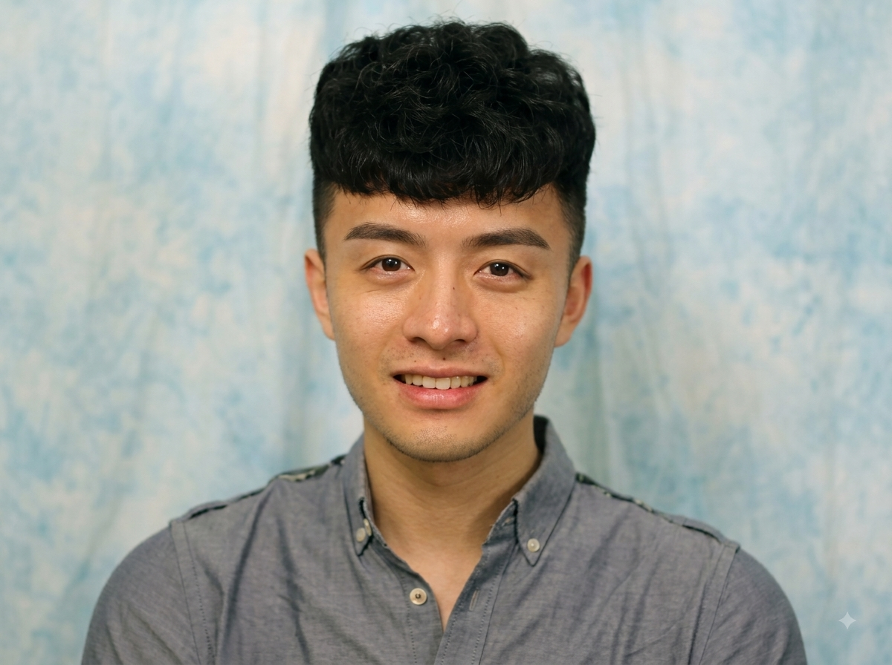

Trading Depth for Time in Recurrent Transformers
Preprint 2026
I am a PhD student in the Department of Computer Sciences at the University of Wisconsin–Madison, advised by Prof. Yong Jae Lee. Prior to UW–Madison, I obtained my M.S. degree from the Robotics Institute at Carnegie Mellon University, where I worked with Dr. Dong Huang, Prof. Haohan Wang, and Prof. Eric Xing. I received my B.E. degree from Nanjing University of Science and Technology.
I have interned at Microsoft with Yelong Shen; at Meta with Daniel Bolya, Christoph Feichtenhofer, and Miao Liu; and at Adobe with Zongze Wu and Eli Shechtman.
I'm on the job market now! Please feel free to reach out if you know of relevant opportunities.

My research focuses on large language model training, particularly recurrent Transformer architectures and their pre-training and post-training. I am interested in new forms of recurrent and latent computation for building more capable and compute-efficient language models. My broader interests include multimodal foundation models, building on prior work in vision and video understanding.
Preprint 2026